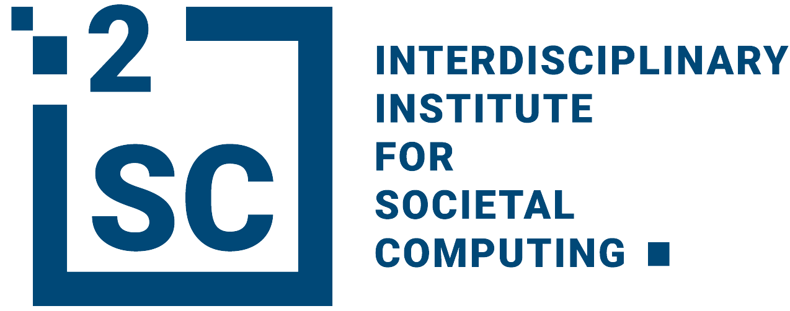
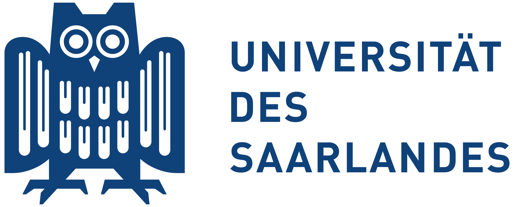
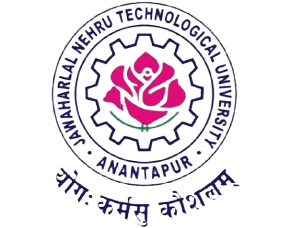
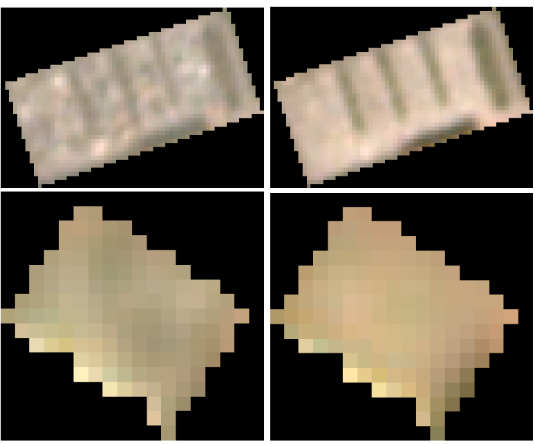
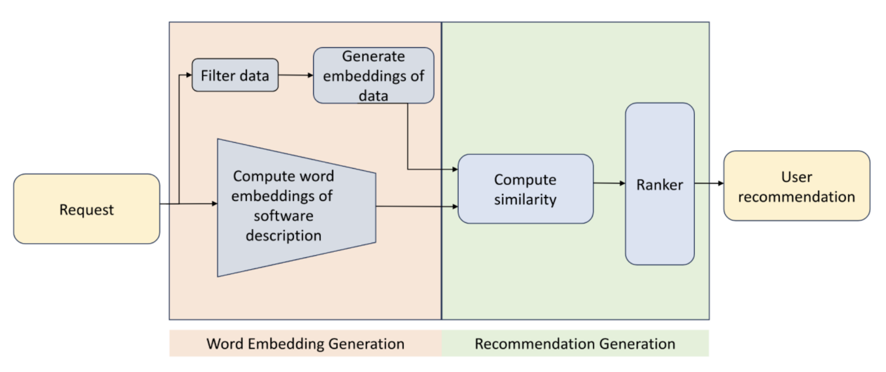

I am a Doctoral Researcher at GESIS – Leibniz Institute for the Social Sciences in Cologne, Germany. My work is about how we judge whether an AI system is actually any good. I build the datasets, evaluation methods and documentation that make claims about language models and AI research assistants possible to check. This work is part of NFDI4DS, Germany’s national research data infrastructure for data science and artificial intelligence.
Before this I spent three years as a Research Assistant in the Interdisciplinary Institute for Societal Computing (I2SC) led by Prof. Dr. Ingmar Weber, estimating mobility in conflict-affected regions from low-resolution satellite imagery. I hold an M.Sc. in Visual Computing from Saarland University, where my thesis on multimodal misinformation detection was supervised by Prof. Dr. Dietrich Klakow and Dr. Usman Naseem. I received my Bachelors degree in Computer Science and Engineering from Jawaharlal Nehru Technological University Anantapur, India, and completed my Bachelors thesis in collaboration with Innopolis University, Russia, supervised by Prof. Dr. Manuel Mazzara.
GESIS
Doctoral Researcher
2026 – Present

I2SC
Research Assistant
2023 – 2026

Saarland University
M.Sc. Visual Computing
2023 – 2026
Innopolis University
Research Intern
2022

JNTUA
B.Tech.
2018 – 2022
Documenting what benchmark datasets actually cover and where they are biased, and testing models for robustness and reproducibility rather than headline accuracy.
Defining the tasks AI research assistants are asked to perform, and the protocols, metrics and user studies needed to judge how well they do them.
Adapting language and embedding models to social science language, and measuring whether that genuinely improves search over scientific literature and research data.
Building text-and-image models for languages with little training data, and the benchmarks to measure them, so tools such as automated fact-checking work beyond English.
Started a Research Associate/Doctoral Researcher position at GESIS – Leibniz Institute for the Social Sciences in Cologne, Germany.
Concluded my time as a Research Assistant at the Interdisciplinary Institute for Societal Computing (I2SC), Saarland University.
Completed my M.Sc. in Visual Computing at Saarland University, Germany.
Our workshop paper on a Weak Supervision Learning Approach Towards an Equitable Mobility Estimation was accepted at ICWSM 2025.
Our paper about LLM-Based Recommender Systems was accepted at the 33rd Annual Workshop on Information Technologies and Systems (WITS'23).
Started working as a Research Assistant in the Societal Computing research group at Saarland University, Germany.
Started Masters in Visual Computing at Saarland University, Germany.
Our paper about Melanoma Segmentation was accepted to Springer Multimedia Tools and Applications.
Our paper about Face Mask Recognition was accepted to the Springer Lecture Notes in Networks and Systems book series.
Graduated with a B.Tech. in Computer Science & Engineering from Jawaharlal Nehru Technological University Anantapur, India.
Invited to be a reviewer for The Journal of Supercomputing.
Our paper about Brain Tumor Detection was accepted to the Springer Advances in Intelligent Systems and Computing book series.
Our paper about sentiment analysis was accepted to the International Journal of Speech Technology.


For the full list of publications, see my Google Scholar profile.